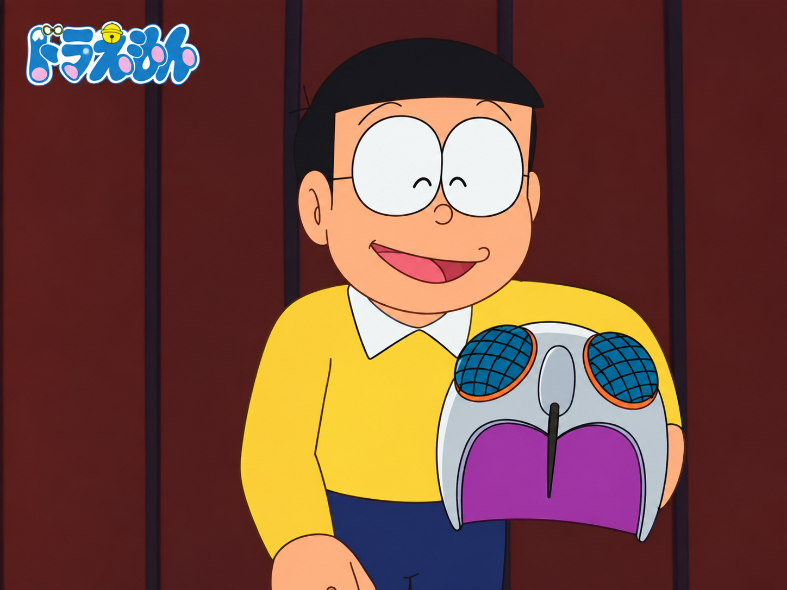
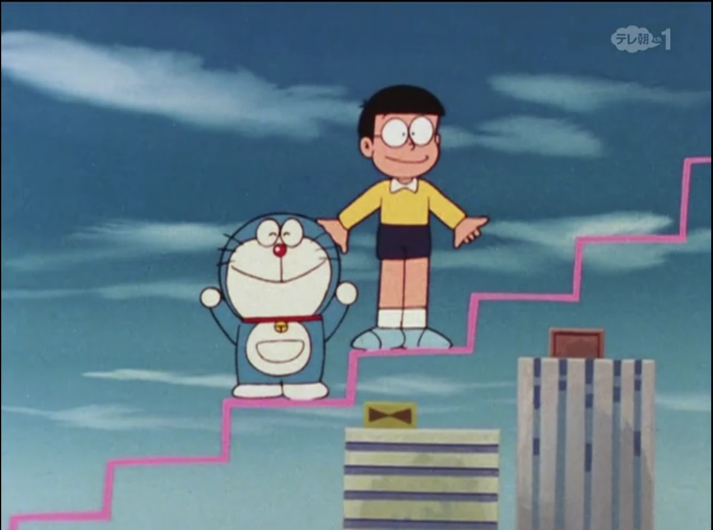
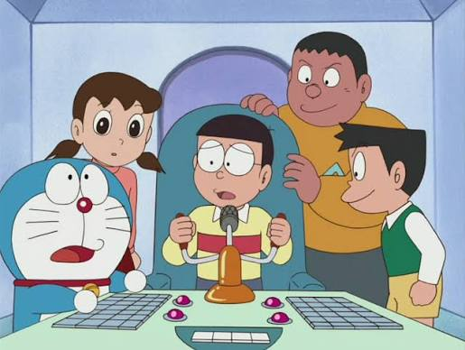
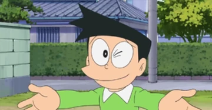
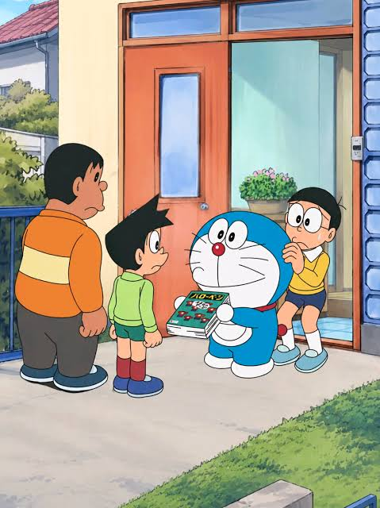
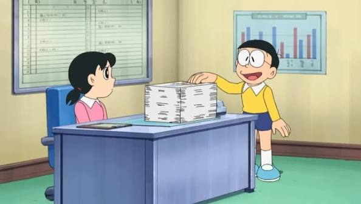
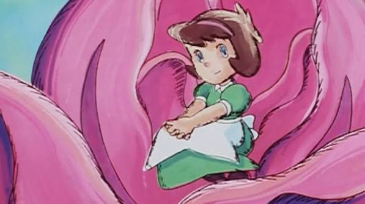

EP 01
Nobita and Doraemon's First Adventure
Doraemon arrives from the future and begins his amazing journey with Nobita.
Explore the amazing world of Doraemon episodes, adventures, friends, gadgets and unforgettable moments with Nobita and everyone.
Doraemon arrives from the future and begins his amazing journey with Nobita.

Nobita tries to escape from his homework with the help of Doraemon's gadgets.

Nobita discovers one of Doraemon's most famous gadgets.

Nobita learns how to fly using Doraemon's Take-Copter.

Nobita travels through time and gets into an unexpected adventure.

Nobita uses Memory Bread to prepare for his school examination.

Doraemon introduces Nobita to another amazing gadget.

Nobita experiments with a gadget that can make objects bigger.

A mysterious cloth gives Nobita the power to change an object's age.
Gian decides to show everyone his amazing singing talent.